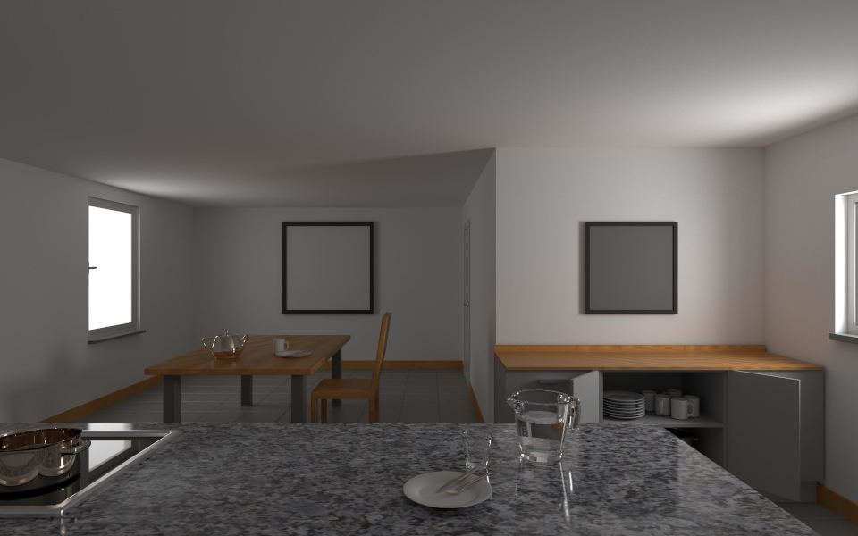
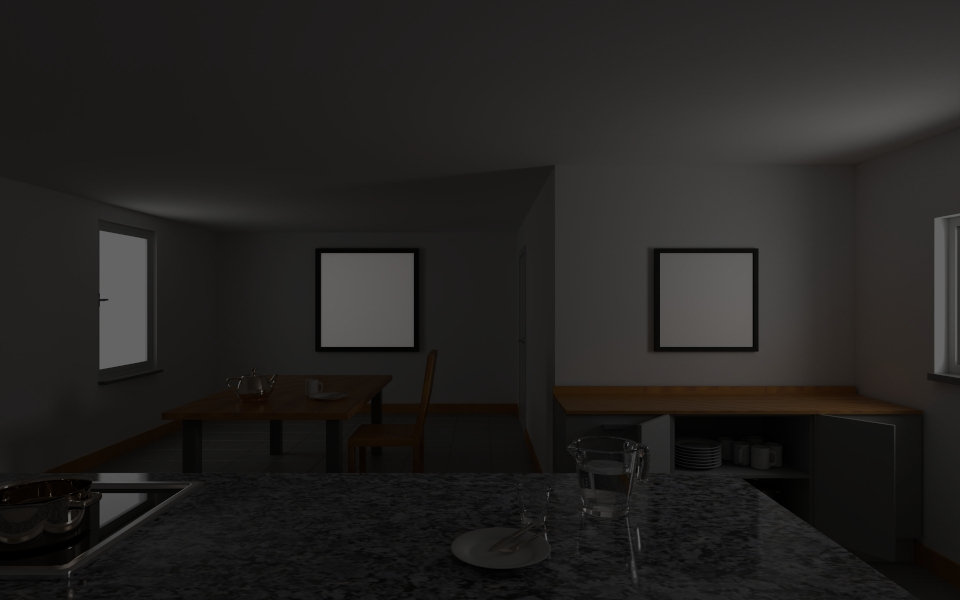

Here is my take on this demonstration of lightness constancy, made in Blender and rendered with Mitsuba. While the framed squares appear to be of different shades of grey (and also have differing reflectance values), their pixel values are the same.

Here the surround of the squares is darkened to show that they indeed have the same pixel valus.
In contrast to a digital camera, our visual perception does not just tabulate single pixel values, but also takes their context into account. We perceive whole objects with their surface color and illumination.